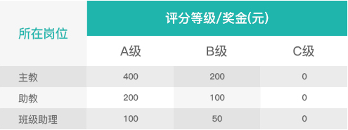
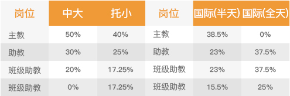
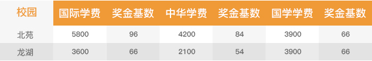
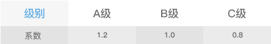

教师奖金相关数值
Relative Value Of Teacher's Bonus
人才预警库
Early-Warning Database
TEACHERS' MONTHLY PERFORMANCE ASSESSMENT
1、园长、教学主任根据检查评分表，对班级各教师每月完成10次的全面工作检查和记录得分，并计算出得分的平均值。
2、根据月度各岗位的平均得分，同岗位教师在全校范围内进行排序，排名前1/3的同岗位教师评为A级；排名中间1/3的同岗位教师评为B级；排名最后1/3 的同岗位教师评为C级。
3、惩罚：连续3个月均评估为C级的教师，进入人才预警库，由校园组织培训和学习；若第4个月仍没有改善，则由总部运营部和园长共同挑选其中不低于 10%的人员进入淘汰名单。
TEACHERS' MONTHLY PERFORMANCE ASSESSMENT
1、教师个人奖金按照每月绩效考核得分来进行排序；
2、排名前1/3的同岗位教师评为A级；排名中间1/3的同岗位教师评为B级；排名最后1/3的同岗位教师评为C级。
3、如表格所示

4、奖金分配（加盟园可进行修改）
如表格所示

1、奖金基数？（加盟幼儿园可修改基数）
1：北大公学所属幼儿园按照班级所学课程的不同，收取学费也不同，所以奖

2、班级实际出勤孩子数量？（出勤数目前需要园长进行手动输入）
1：班级孩子人数=（孩子1*出勤天数+孩子2*出勤天数+……+孩子n*出勤天 数）/本月应出勤天数
2：若请假半天按当天出勤计算；
3、托小班奖金基数和班级评级系数
1：班级评级
(一)：园长、保健医、教学主任对班级进行检查，每月分别完成10张检查表，共30张。
(二)：根据各班级得分的平均值进行排序，前1/3为A级、中间1/3为B级、后1/3为C级。
2：托小班奖金基数：该基数直接设置即可，没有考核；例如：托小班奖金基数=1.35
3：如表格所示：
